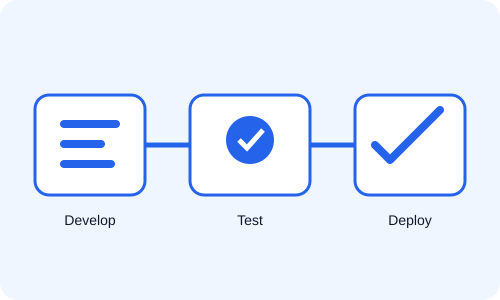

Infrastructure & Automation
DevOps and Automation
I am interested in DevOps because it brings software development and IT operations together to improve how applications are built, tested and deployed. I find the automation of repetitive development and operational tasks particularly interesting.
I want to explore continuous integration and continuous delivery, containerization, infrastructure as code and monitoring. Technologies such as Docker, Kubernetes and CI/CD pipelines are especially relevant to the direction in which I want to develop my technical skills.